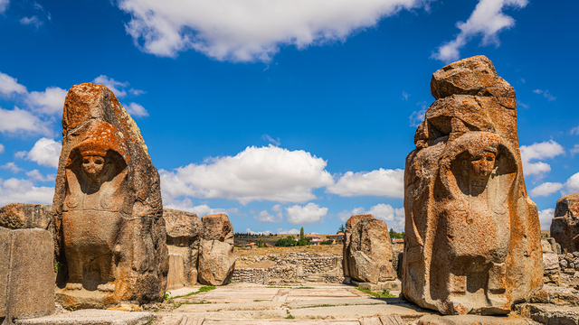

Çorum, Türkiye'nin Karadeniz Bölgesi'nin Orta Karadeniz bölümünde yer alan bir ildir. 04 Şubat 2021 TÜİK verilerine göre merkez ilçeyle beraber 14 İlçe, 16 belediye, bu belediyelerde 126 mahalle, ayrıca 759 köy bulunmaktadır.[3] Çorum ili, leblebisi ile tanınır. İlde toprak ve makine endüstrisi oldukça gelişmiştir. Osmancık ilçesinde pirinç üretimi etkin bir şekilde yapılmaktadır. Kapari bitkisinin Türkiye'deki anavatanı Osmancık ilçesidir.
Çorum il toprakları tarihi devirlerin en başından beri insan yerleşimine sahip olmuştur. Kadim Hititler'in başkenti Hattuşaş Çorum ilindedir. Tarihi devirlere bakıldığında Alacahöyük, Hattuşaş, İskilip, Kuşsaray, Pazarlı, Eskiyapar, Büyükgülücek ve Balimsultan köyü çevresinde yapılan arkeolojik kazılarda ve toprak üstü buluntularından anlaşılır ki Bakır Çağı ile Tunç Çağı zamanlarına giden araç, gereç ve silahlar bulunmuştur.
Çorum il topraklarının %61'i dağlıktır. Bu dağlar derin vadilerle yarılarak birbirinden ayrılmışlardır. Dağlar kuzey-batı yönünde uzanmıştır. Çorum il topraklarının batı kısmı Kuzey batı Anadolu'nun en önemli dağ sırası olan ve batıda Sakarya nehri ile doğuda Kızılırmak nehri arasında uzanan Köroğlu Dağ sırasının en doğu ucunda yer alır. Köroğlu dağ sırasının Kızılırmak havzasına ulaştığı yerde oluşan önemli yerleşmeler; İskilip, Bayat, Kargı, Oğuzlar, Dodurga, Alpagut'tur. Çorum ili İç Anadolu bölgesinin kuzey kısmında yer almaktadır. Karasal iklimi etkisi altındadır. Doğusunda Amasya, güneyinde Yozgat, batısında Çankırı, kuzeyde Sinop, kuzey batısında Kastamonu, kuzey doğusunda Samsun, güney batısında Kırıkkale illeri ile çevrilidir.
|  |
Şehir: Çorum Plaka: 19 En Meşur Yiğeceği: Leblebi En Meşhur Yeri: Hattuşaş Antik Kent 2024 Nüfusu: 528 bin 351 |